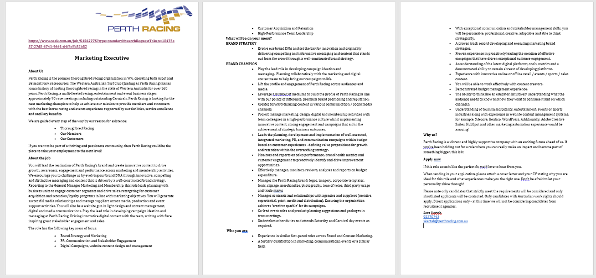

Ideal Job
The position advertised is for a Marketing Executive with Perth Racing in Western Australia. It requires the applicant to be involved in developing different aspects of the organisation including website and content design, digital and media communications. The position also requires building relationships with suppliers across media, production and event activities as well as stakeholder engagement. The position appeals to me as it is multifaceted across many of my interests and requires skills I hope to learn while doing the Bachelor of IT – particularly with my interest in web design and marketing. It is also a position connected to equestrian sport which is another of my passions. I think I would enjoy challenging myself to fulfil the many varying requirements outlined in this advertised position, with the highlight on Brand Strategy and innovation to bring campaigns to life.
The skills necessary for this job are as follows:
- Web design
- Content creation
- Understanding of brand and content marketing
- Leadership and team player
- Time management
- Tertiary qualification in marketing, communications, events or similar
- Good communicator
- Stakeholder management
- Proven experience
- Personable and able to develop relationships
- Up-to-date on the latest digital and developing platforms
The experience that I currently have relate well to the required skills of time management, communication, content creation, developing relationships, leadership and being a team player. These are skills that I have cultivated from a long-time employment position in our own family promotional product company, delivering customer service, stock and budget control. I have also been an executive member of a not-for-profit equestrian organization in the Committee positions of Secretary, Competition Coordinator, Social Media and Sponsorship for the past five years.
I would envisage learning on my completion of the Bachelor of IT, to have experienced further development in my skills outlined above as I work through the subjects - as well as skills relevant to those listed, that I do not currently have. The subjects on web design being key and minoring in marketing to fill the gaps. I would hope that my knowledge obtained of other IT platforms during this course will also enhance my future job prospects in being an all-round IT professional. It might be that I will have to do further tertiary study in the Marketing sector after the completion of my IT degree. A Masters degree might also be a relevant step to take in further tertiary study. For positions like this, requiring proven experience in the skills/areas outlined, it may be that I will seek out a work experience or placement in a similar role to show my commitment and gain the necessary experience.